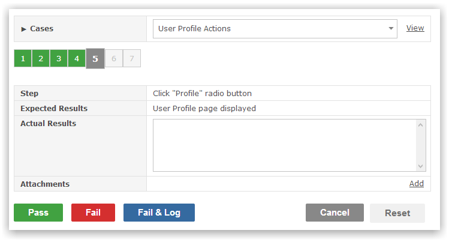
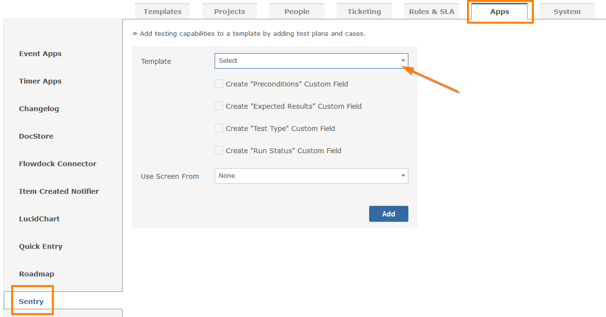

Sentry provides testing capability for managing test plans, cases and test runs.

A test case is used to define the test steps, expected results and any pre-conditions that must exist before testing can commence.
A test plan contains one or more test cases. The test plan provides a holistic view of what is to be tested.
A test run is used to execute the tests, record outcomes and eventually mark the test case as either passed or failed. New items (e.g. Bugs) can be logged when a test case fails.
Test traceability enables items to be associated with test cases.
Every project that requires testing capability must ensure the relevant Project Template has been configured to support test plans, cases and runs.

The following video overviews the features and power of Sentry for all testing needs.